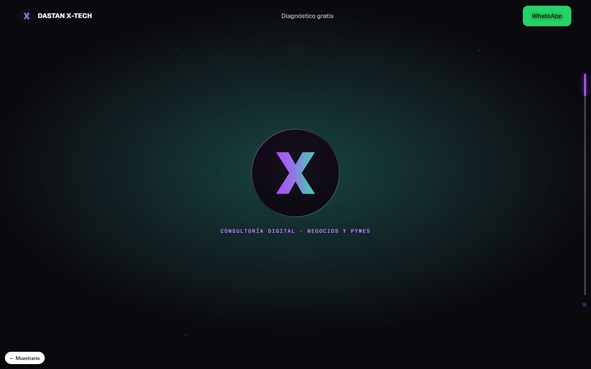
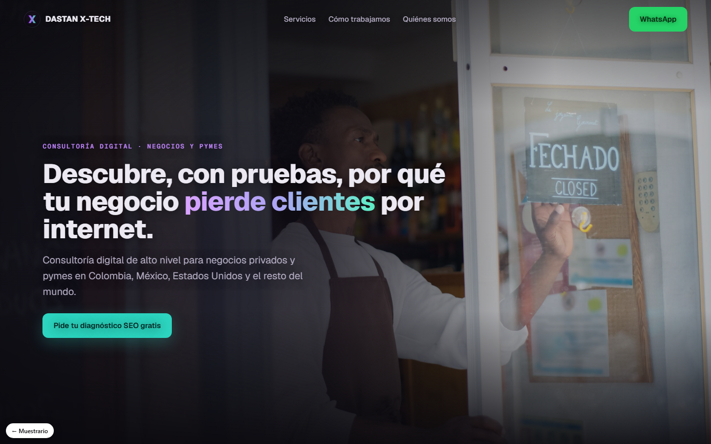
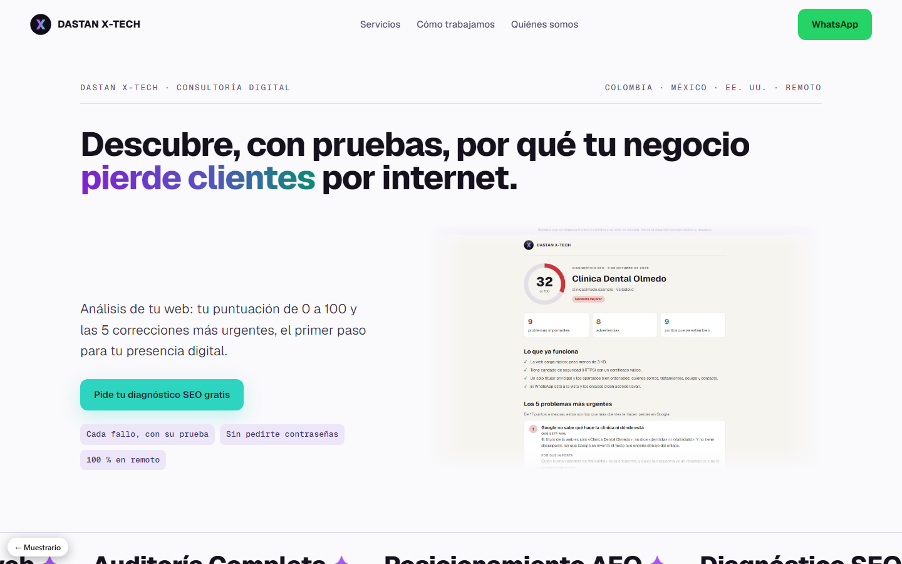
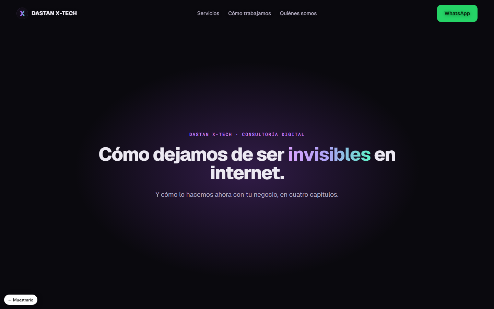
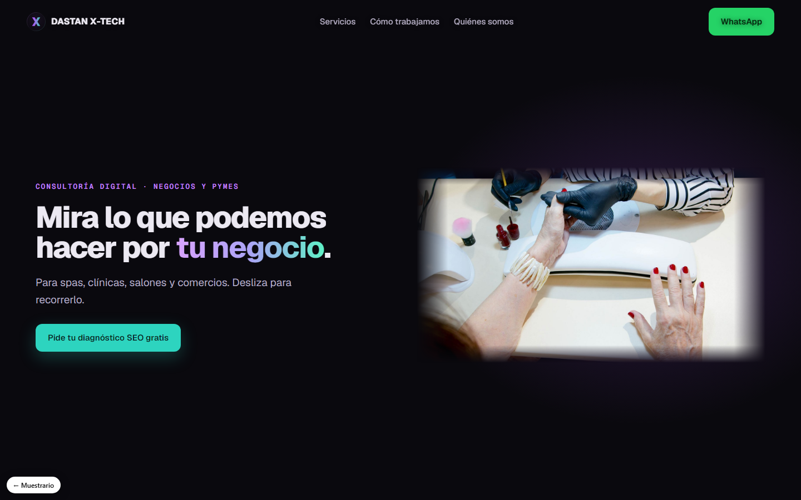
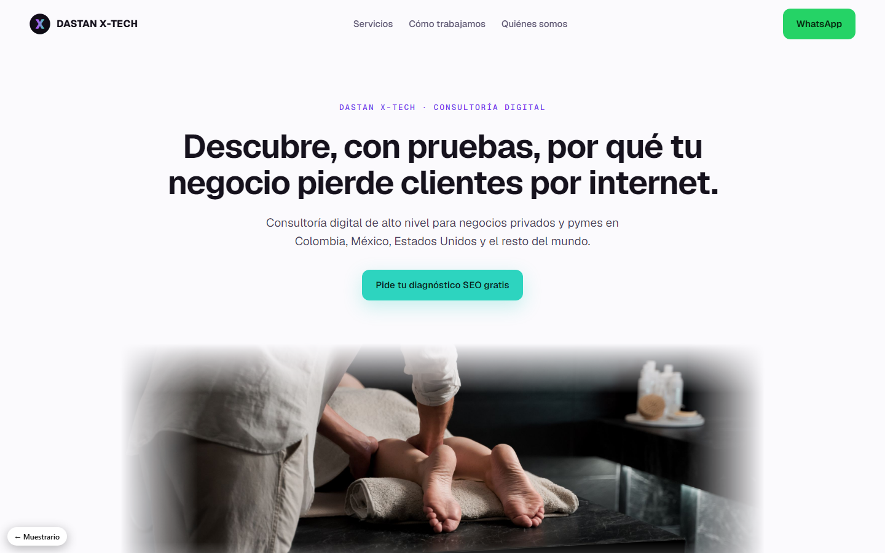
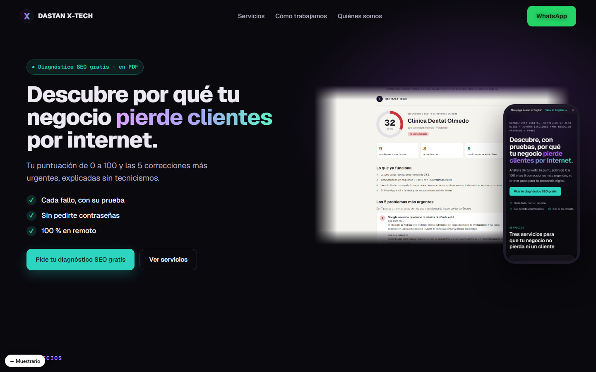
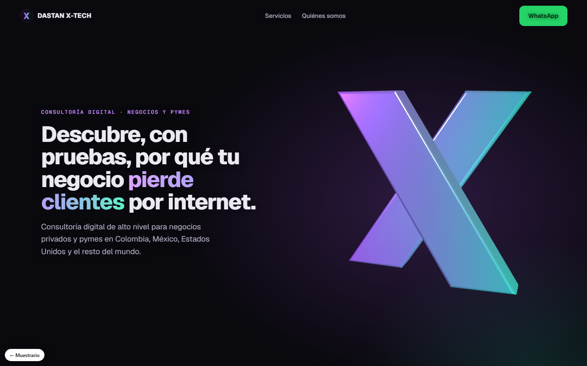

01
Túnel 3D
Cada mensaje surge del fondo y lo atraviesas.→

02
Cinemático
Escena a escena, como un tráiler.→

03
Editorial
Claro, elegante, como una revista.→

04
Historia por capas
El negocio contado en capítulos.→

05
Galería horizontal
Los trabajos desfilan de lado.→

06
Minimalista premium
Calma, aire y claridad.→

07
Pensada para convertir
Todo empuja a escribirte.→

08
Objeto 3D
Tu marca en 3D real.→